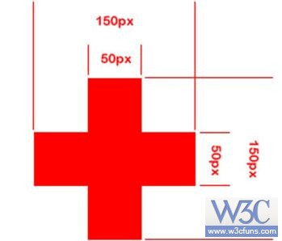

Don’t buy these electronics used
Money may be tight, but you may kick yourself for purchasing these electronics secondhand.
Even when the price is low, the risk may be too high.

home content
复制代码运行代码编辑代码
Powered by W3Cfuns.com
答：
复制代码运行代码编辑代码
Don’t buy these electronics used
Money may be tight, but you may kick yourself for purchasing these electronics secondhand.
Even when the price is low, the risk may be too high.

复制代码运行代码编辑代码
Powered by W3Cfuns.com
4. 简述border:none以及border:0的区别，并给出使用建议。
答：border:none表示边框样式无,border:0表示边框宽度为0;当定义了border:none,即隐藏了边框的显示,实际就是边框宽度为0.
当定义边框时,必须定义边框的显示样式.因为边框默认样式为不显示none,所以仅设置边框宽度,由于样式不存在,边框的宽度也自动被设置为0.
五、勇气拼一拼，让你超越别人的加分题目来了！ （不限于一种方法，共30分）
使用重构的方式制作出一个如下图的水平、垂直都居中短边为50px，长边为150px的红色十字架。

十字架
要求：
1.使用2个div完成
2.使用3个div完成
3.使用5个div完成
答案：
1.使用2个div完成
复制代码运行代码编辑代码